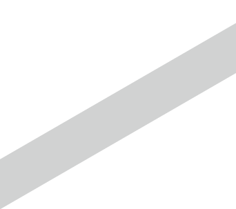
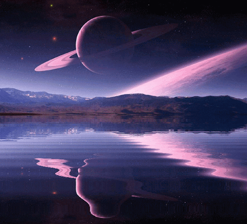

<!DOCTYPE html>
<html>
<head>
<title>What are Celestial Bodies? (Comets, Asteroids, Dwarf Planets)</title>
<script src="https://ajax.googleapis.com/ajax/libs/jquery/3.5.1/jquery.min.js"></script>
<meta charset="utf-8">
<meta name="viewport" content="width=device-width, initial-scale=1, shrink-to-fit=no">
<link rel="stylesheet" href="./style.css">
<link rel="stylesheet" href="https://maxcdn.bootstrapcdn.com/bootstrap/4.0.0/css/bootstrap.min.css" integrity="sha384-Gn5384xqQ1aoWXA+058RXPxPg6fy4IWvTNh0E263XmFcJlSAwiGgFAW/dAiS6JXm" crossorigin="anonymous">
<script src="https://cdnjs.cloudflare.com/ajax/libs/popper.js/1.12.9/umd/popper.min.js" integrity="sha384-ApNbgh9B+Y1QKtv3Rn7W3mgPxhU9K/ScQsAP7hUibX39j7fakFPskvXusvfa0b4Q" crossorigin="anonymous"></script>
<script src="https://maxcdn.bootstrapcdn.com/bootstrap/4.0.0/js/bootstrap.min.js" integrity="sha384-JZR6Spejh4U02d8jOt6vLEHfe/JQGiRRSQQxSfFWpi1MquVdAyjUar5+76PVCmYl" crossorigin="anonymous"></script>
<script>
 $(document).ready(function(){
    var object1 = $('.blue-bars');
                var object2 = $('.yellow-bars');
                var object3 = $('.red-bars');
                var object4 = $('.green-bars');
                var object5 = $('.grey-bars');
                var object6 = $('.pink-bars');

                $(window).mousemove(function(event){
                    var valueX = (event.pageX * -1/12);
                    var valueY = (event.pageY * -1/12);

                    object1.css({
                        'transform':'translate3d('+ valueX+'px,'+valueY+'px,0)'
                    });
                });
                $(window).mousemove(function(event){
                    var valueX = (event.pageX * -1/15);
                    var valueY = (event.pageY * -1/20);
                    object2.css({
                        'transform':'translate3d('+ valueX+'px,'+valueY+'px,0)'
                    });
                });
                $(window).mousemove(function(event){
                    var valueX = (event.pageX * -1/20);
                    var valueY = (event.pageY * -1/15);
                    object3.css({
                        'transform':'translate3d('+ valueX+'px,'+valueY+'px,0)'
                    });
                });
                $(window).mousemove(function(event){
                    var valueX = (event.pageX * -1/20);
                    var valueY = (event.pageY * -1/20);
                    object4.css({
                        'transform':'translate3d('+ valueX+'px,'+valueY+'px,0)'
                    });
                });
                $(window).mousemove(function(event){
                    var valueX = (event.pageX * -1/25);
                    var valueY = (event.pageY * -1/20);
                    object5.css({
                        'transform':'translate3d('+ valueX+'px,'+valueY+'px,0)'
                    });
                });
                $(window).mousemove(function(event){
                    var valueX = (event.pageX * -1/20);
                    var valueY = (event.pageY * -1/25);
                    object6.css({
                        'transform':'translate3d('+ valueX+'px,'+valueY+'px,0)'
                    });
                });
        });
</script>
</head>
<body>
    
    
    
    
    
    

    <div>
      <ul class="topnav">
      <a href="./index.html" class="button1"></a>
      <li><a class = "button2" href="./writers.html">Writers</a></li>
      <li><a class = "button1" href="./index.html">Home</a></li>
      </ul>
    </div>
   <div class="container" style="background-color: #00364D; margin-bottom: 100px; padding: 0%;">
      <div class="jumbotron jumbotron-fluid" style="background-color: #00364D; padding: 0%;">
        <div class="container" style="padding: 0%;">
          <center></center>
          </div>
      </div>
  </div>
    
    <div class="list-group" style="float: right; margin-right: 10px; width: 27%;">
        <a href="./pat(essay1).html" class="list-group-item list-group-item-action flex-column align-items-start active" style="background-color:#00364D ;">
          <div class="d-flex w-100 justify-content-between">
            <h5 class="mb-1">What are Celestial Bodies? (Comets, Asteroids, Dwarf Planets)</h5>
            <small style="color: #dddddd;">March 15, 2021</small>
          </div>
          <p class="mb-1">Humans are so interested in the world outside Earth. This world is called
            space. In space, there are discoveries of humans that are named as a Celestial
            Body. Earth is a celestial body in our Solar System. Other than planets, stars,
            comets, asteroids, meteors, and galaxies can be called a celestial body...</p>
          <small style="color: #dddddd;">Patrick Miguel M. Babala</small>
        </a>
        <a href="./pat(essay2).html" class="list-group-item list-group-item-action flex-column align-items-start" style="color: #205968;">
          <div class="d-flex w-100 justify-content-between">
            <h5 class="mb-1">A Courageously Amiable Man</h5>
            <small class="text-muted">March 24, 2021</small>
          </div>
          <p class="mb-1">At this day and age, people are giving up so easily. Trying isn’t even a word for them.
            Giving up easily is very normal at this era...</p>
          <small class="text-muted">Patrick Miguel M. Babala</small>
        </a>
        <a href="./pat(essay3).html" class="list-group-item list-group-item-action flex-column align-items-start" style="color: #205968;">
          <div class="d-flex w-100 justify-content-between">
            <h5 class="mb-1">Becoming a CIITeen: What Track and/or Strand to Pursue?</h5>
            <small class="text-muted">April 5, 2021</small>
          </div>
          <p class="mb-1">As we grow older and become more mature, we do not suffer from any childlike
            problems. Some of them can be still a problem but only a limited amount of it. One of the most
            important decision in our lives is what career should we pursue?..</p>
          <small class="text-muted">Patrick Miguel M. Babala</small>
        </a>
      <a href="./pat(essay4).html" id= "buttonessay3" class="list-group-item list-group-item-action flex-column align-items-start" style="color: #205968;">
        <div class="d-flex w-100 justify-content-between">
          <h5 class="mb-1">5 Types of Online Students: What type of student are you?</h5>
          <small class="text-muted">April 13, 2021</small>
        </div>
        <p class="mb-1">Online students are students that are attending online classes due to the
            pandemic that has been present for more than a year now. Every student in these
            online classes are suffering due to the overload of works and tasks...</p>
        <small class="text-muted">Patrick Miguel M. Babala</small>
      </a>
    <a href="./pat(essay5).html" id= "buttonessay4" class="list-group-item list-group-item-action flex-column align-items-start" style="color: #205968;">
        <div class="d-flex w-100 justify-content-between">
          <h5 class="mb-1">How to Do CPR in a Correct and Safe Way</h5>
          <small class="text-muted">April 19, 2021</small>
        </div>
        <p class="mb-1">Saving one’s life makes you awesome and at the same time a savior. Saving one’s life is
            not easy and will never be easy. A chance of ending one’s life can be done if you do It in a wrong
            order or step...</p>
        <small class="text-muted">Patrick Miguel M. Babala</small>
      </a>
    </div>
      <div class="jumbotron" style="float: left; margin-left: 10px; width: 70%;">
        <div class="container">
        <center>
            
            <h1 class="title">What are Celestial Bodies? (Comets, Asteroids, Dwarf Planets)</h1>
        </center>
        <address>
            <b>Patrick Miguel M. Babala</b><br>
            March 15, 2021
        </address>
        <p class="indent">Humans are so interested in the world outside Earth. This world is called 
            space. In space, there are discoveries of humans that are named as a Celestial 
            Body. Earth is a celestial body in our Solar System. Other than planets, stars, 
            comets, asteroids, meteors, and galaxies can be called a celestial body. By 
            definition a celestial body is any natural body outside of the Earth’s atmosphere. 
            Easy examples are the Moon, Sun, and the other planets of our solar system. But 
            those are very limited examples. The Kuiper belt contains many celestial bodies. 
            Any asteroid in space is a celestial body (Coffey, 2009). There are many more 
            discoveries yet to be discovered by humans that can be classified as a celestial 
            body. We only have explored and discovered 4% of the visible universe. Humans 
            are still a long way from discovering the whole universe because of the 
            continuous expanding of the universe.</p>
        <p class="indent">Comets are one of the great examples of a celestial body in our universe. 
            They are called “Dirty Snowballs” in space. They contain dust, ice, carbon dioxide, 
            ammonia, methane and more. Astronomers think comets are leftovers from the 
            material that initially formed the solar system about 4.6 billion years ago (Choi, 
            2017). Comets and asteroids can be pretty similar. The difference lies in the 
            presence of the coma and tail. Comets are the reason why meteor showers 
            happen. Comets leave trails of debris that can lead to meteor showers on Earth. I 
            have yet to see a meteor shower with my own eyes but from the videos I saw 
            online, meteor showers are like fireworks in space. Its beauty is outstanding 
            rather than an asteroid. </p>
        <p class="indent">Asteroids can be a part of beauty of space but most of the times, they are 
            cause of destruction in planets in our solar system. Asteroids are the reason why 
            the dinosaurs millions of years ago went extinct. This asteroid is called Chicxulub 
            impactor. This asteroid struck Earth 66 million years ago creating the Chicxulub 
            crater. This is also the main cause why dinosaurs went extinct. Most of the 
            asteroids live in the main asteroid belt. Trojan asteroids are asteroids belonging to 
            one of two groups which orbit the sun and at the Lagrangian points roughly 60 
            degrees ahead of it and behind it. Amor asteroids are asteroids that cross the 
            orbit of Mars. C type asteroids also known as carbonaceous asteroids that are 
            made up of carbon molecules. S type asteroids also known as stony asteroids that 
            are indicative of a siliceous mineralogical composition. M type asteroids also 
            known as metallic asteroids that are made from nickel and iron. A certain 
            discovery happened back when a dwarf planet was discovered in the asteroid 
            belt.</p>
        <p class="indent">Dwarf planets are worlds that are too small to be considered full-fledged 
            planets, but too large to fall into smaller categories (Space.com, 2017). An 
            example of a dwarf planet is the planet Pluto. Pluto was discovered back in 1930 
            but was named a dwarf planet in 2005. Eris is also an example of a dwarf planet. 
            Eris was discovered back in 2003. Astronomers estimates that there could be as 
            many as 200 dwarf planets in the solar system and the Kuiper Belt (Space.com, 
            2017). There are other known dwarf planets in our solar system. An example of 
            this is Haumea, Makemake, and Ceres. Dwarf planets are also part of celestial 
            bodies.</p>
        <p class="indent"> In conclusion, humans have yet to discover more asteroid, comets, and 
            dwarf planets. Celestial bodies can be beautiful, some can be pretty destructive, 
            and they can be pretty mysterious. Celestial bodies are everywhere in space. The 
            universe keeps on expanding which means there are more celestial bodies yet to 
            be discovered. Unknown celestial bodies are yet to be seen, researched, and 
            discovered.</p>
        <br>
        <center>
            <p><b>References</b></p> </center>
            <blockquote style="padding-left: 50px; padding-right: 50px;">
                Coffey, J. (2015, December 25). Celestial body. Retrieved March 15, 2021, from <a href="https://www.universetoday.com/48671/celestial-body/">https://www.universetoday.com/48671/celestial-body/</a><br><br>
                Choi, C. (2017, October 24). Comets: Facts about the 'dirty snowballs' of space. Retrieved March 15, 2021, from <a href="https://www.space.com/53-comets-formation-discovery-andexploration.html">https://www.space.com/53-comets-formation-discovery-andexploration.html</a><br><br>
                Atkinson, N. (2015, September 10). What are asteroids? Retrieved March 15, 2021, from <a href="https://phys.org/news/2015-09-asteroids.html">https://phys.org/news/2015-09-asteroids.html</a><br><br>
                Staff, S. (2017, October 28). Dwarf planets: Science & facts about the solar System's smaller worlds. Retrieved March 15, 2021, from <a href="https://www.space.com/15216-dwarf-planetsfacts-solar-system-sdcmp.htm">https://www.space.com/15216-dwarf-planetsfacts-solar-system-sdcmp.htm</a>
            </blockquote>
      </div>
    </div>
    <center><a href="./writers.html" type="button" class="btn btn-primary btn-lg" style="margin-top: 20px; background-color:#00364D ; color: white;">Back</a></center>
</body>
</html>